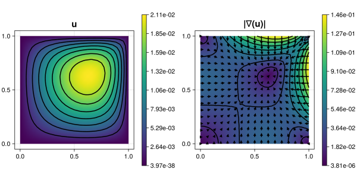

201 : Poisson-Problem
This example computes the solution $u$ of the two-dimensional Poisson problem
\[\begin{aligned} -\Delta u & = f \quad \text{in } \Omega \end{aligned}\]
with right-hand side $f(x,y) \equiv xy$ and homogeneous Dirichlet boundary conditions on the unit square domain $\Omega$ on a given grid.
The computed solution for the default parameters looks like this:

module Example201_PoissonProblem
using ExtendableFEM
using ExtendableGrids
# define variables
u = Unknown("u"; name = "potential")
# define data functions
function f!(fval, qpinfo)
fval[1] = qpinfo.x[1] * qpinfo.x[2]
end
function main(; μ = 1.0, nrefs = 4, order = 2, Plotter = nothing, kwargs...)
# problem description
PD = ProblemDescription()
assign_unknown!(PD, u)
assign_operator!(PD, BilinearOperator([grad(u)]; factor = μ, kwargs...))
assign_operator!(PD, LinearOperator(f!, [id(u)]; kwargs...))
assign_operator!(PD, HomogeneousBoundaryData(u; regions = 1:4))
# discretize
xgrid = uniform_refine(grid_unitsquare(Triangle2D), nrefs)
FES = FESpace{H1Pk{1, 2, order}}(xgrid)
# solve
sol = solve(PD, FES; kwargs...)
# plot
plt = plot([id(u), grad(u)], sol; Plotter = Plotter)
return sol, plt
end
end # moduleThis page was generated using Literate.jl.